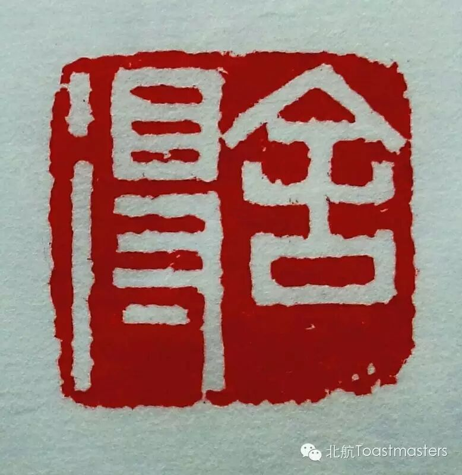
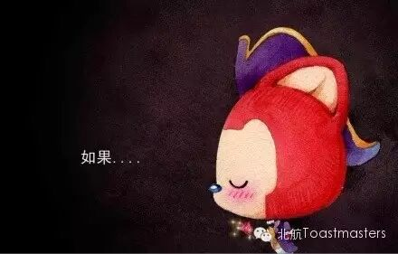

舍得
主持人：王琪琪
即兴演讲主持人：淑华

舍安逸，得挑战；舍急躁，得平静；舍时间，得成果；舍真情，得真爱。若能一切随他去，便是世间自由人。有舍有得，不舍不得，大舍大得，小舍小得。若一切都能舍去，那一切都能得到。2015年你舍了什么？你又得了什么？什么是你舍不得的?什么又是你想得到的？
中文备稿演讲
李映森 CC4 如果

如果全世界我也可以忘记，可是忘不了全世界；
如果上天再给我一次机会，可是没有机会了；
如果有下辈子，可是没有来生了；
如果有如果，可是John要告诉你：
人生没有如果。
陈布凡 CC4 时间管理
感觉什么都没干，一天就过完了？想要干点啥，可是没有时间了？满满一天塞满各种事情，又发现累成狗，而且效率也不高？此时的你最需要来听听Vance告诉你怎么来管理时间。
Toastmasters International (TI) is a nonprofit educational organization that operates clubs worldwide for the purpose of helping members improve their communication, public speaking, and leadership skills.

原文链接（公众号关闭后可能失效）：
https://mp.weixin.qq.com/s/9NjXGRbvAPCzk6EXiajpHQ
https://mp.weixin.qq.com/s/9NjXGRbvAPCzk6EXiajpHQ
第 216/539 篇 · 北航Toastmasters英文演讲俱乐部公众号存档
本页为抢救式本地归档，图文已永久保存。
本页为抢救式本地归档，图文已永久保存。